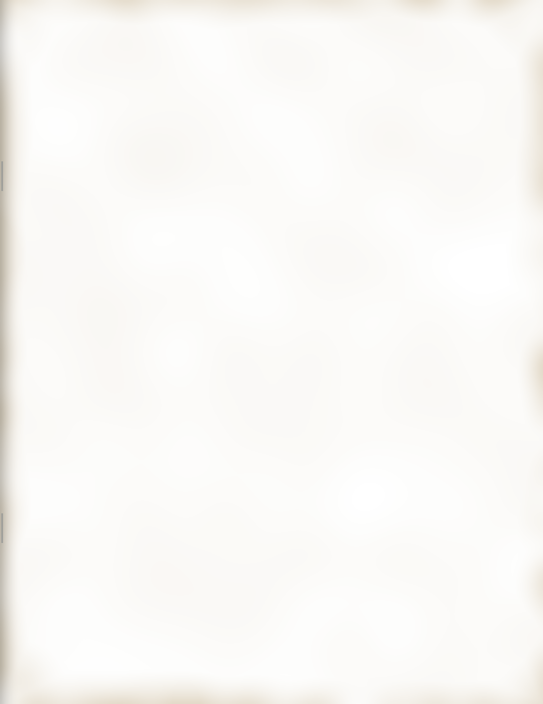

PAGE 3
A Night for the South Bronx
The Evening
7:00Champagne reception
8:00Dinner is served
9:30A word from our host
10:00Pledges and coffee
Our host, Frank White
FROM THE HOST
The city cut our hospital out of its budget. Tonight we put it back. Every dollar you pledge stays right here in the South Bronx.
F.W.
THE DINNER
Served at eight in the Grand Ballroom
THE RECEPTION
Champagne cocktails
A sugar cube soaked in bitters and a splash of cognac, topped up with chilled brut, lemon twist.
To the doors staying open.
Chinatown dumplings
Pork and chive, pan-fried until the bottoms go crisp. Black vinegar and chili oil, no MSG.
Sent up from downtown.
DESSERT
New York cheesecake
Rich and dense, sour cream and lemon zest beaten through, baked slow in a water bath on a buttered crumb crust.
Baked in the Bronx.
AT TABLE
Shrimp cocktail
Jumbos poached and iced, hung on a glass of shredded iceberg. Red sauce sharp with horseradish, lemon wedge.
On ice when you sit down.
Rib eye au poivre
Seared and rested, cracked pepper sauce finished with brandy and cream. Pommes frites.
Medium rare unless you say.
Creamed spinach for the table.
AFTER DINNER
Coffee regular or decaf, and tea.
Cognac from the bar.
Open bar from seven o’clock.
THE GOAL
$16,000,000
$4 million
$8 million
$12 million
$16 million
Compliments
of a Friend
of a Friend
Next stop,
City Hall.
City Hall.
Friends downtown
WELCOME HOME, FRANK
Jimmy Jump, Test Tube and the crew
With thanks from the nurses and doctors of the night shift.
EMERGENCY ROOM
Pledged at press time: $11,200,000.Pledge cards at every table.

